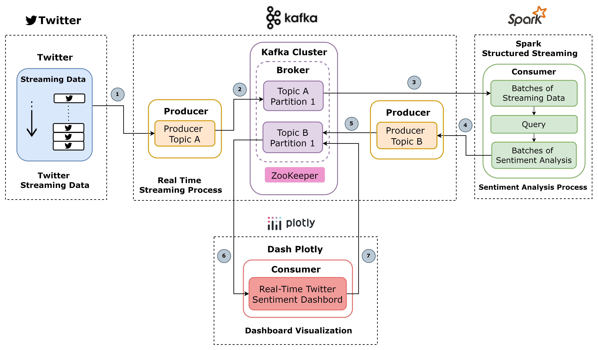
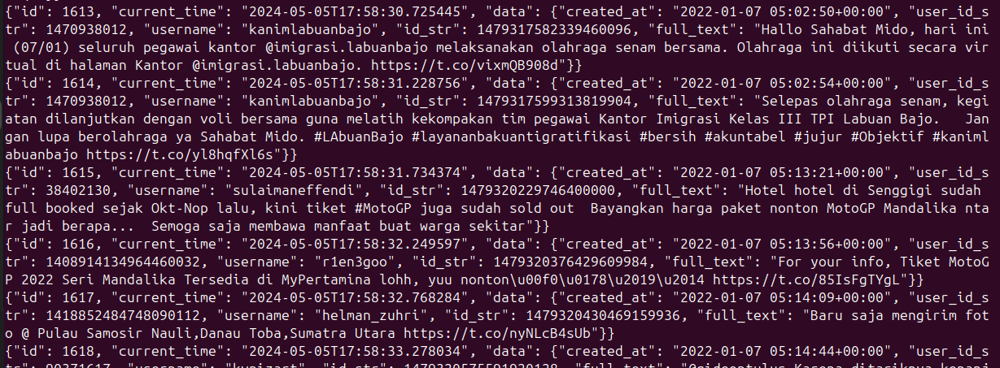
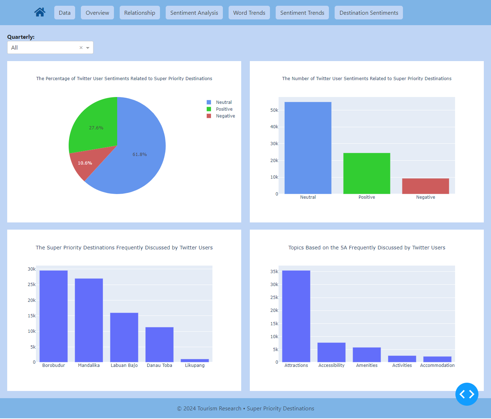
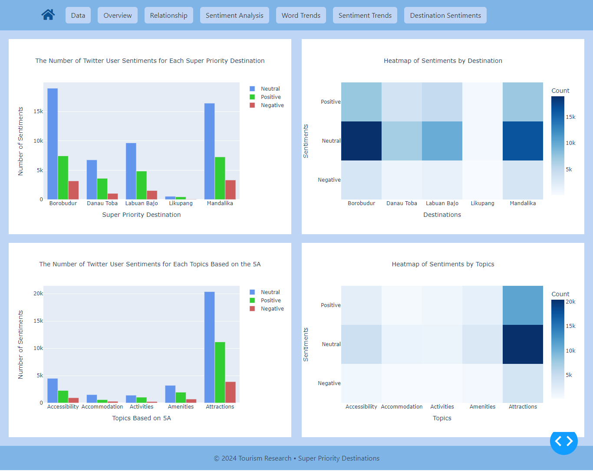
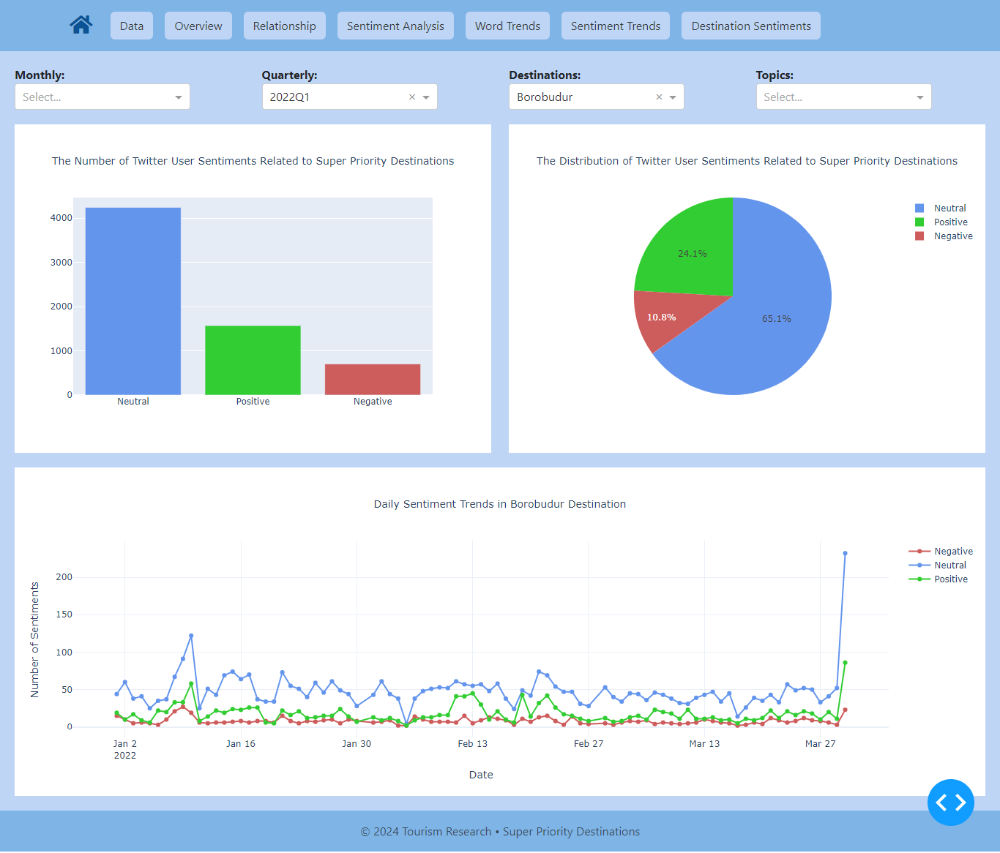
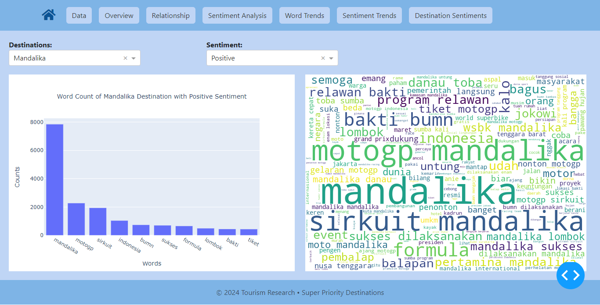
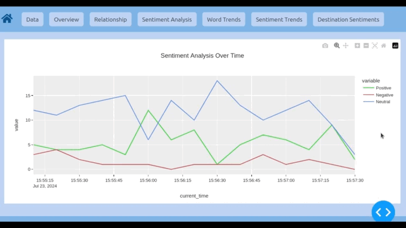

TourDashboard: Analisis Sentimen Destinasi Super Prioritas
Sistem "Analisis Sentimen Destinasi Super Prioritas Berbasis Stream Processing Menggunakan Big Data Platform" ini menyediakan gambaran menyeluruh tentang sentimen pengguna Twitter secara real-time dengan menggunakan big data platforms mengenai Destinasi Super Prioritas di Indonesia (seperti Danau Toba, Borobudur, Mandalika, Labuan Bajo, dan Likupang) pada tahun 2022.
Platform big data yang digunakan yaitu Apache Kafka dan Apache Spark. Tahapan proses yang dilakukan meliputi pengumpulan data dari Twitter, streaming menggunakan Kafka, analisis sentimen, dan proses analisis lainnya menggunakan Spark. Hasilnya berhasil dipresentasikan melalui dashboard menggunakan Dash by Plotly.
Web dashboard ini dikembangkan untuk menganalisis sentimen publik terkait destinasi super prioritas di Indonesia. Dashboard ini menyediakan gambaran menyeluruh tentang sentimen pengguna Twitter terhadap Destinasi Super Prioritas di Indonesia. Dengan memanfaatkan teknologi stream processing dan platform big data, dashboard ini mampu memproses data dari Twitter secara real-time, menampilkan tren sentimen positif, negatif, dan netral.
Tujuannya, dengan visualisasi data real-time dan metrik sentimen, dashboard ini membantu pemangku kepentingan, seperti pemerintah dan industri pariwisata, dalam memahami persepsi publik secara mendalam dan mengambil keputusan berbasis data untuk meningkatkan strategi pariwisata dan meningkatkan pengalaman pengunjung. Melalui visualisasi yang intuitif dan fitur interaktif, pengguna dapat menelusuri perubahan sentimen dari waktu ke waktu serta menggali informasi yang relevan untuk strategi pemasaran dan pengembangan destinasi.
Desain Arsitektur Sistem
Desain arsitektur sistem melibatkan aliran data yang terus menerus dari Twitter melalui crawling, yang mana data tweet dialirkan ke Apache Kafka menggunakan produser Kafka dan disimpan di Topik A. Spark Structured Streaming memproses data dari Topik A untuk analisis sentimen dengan menggunakan pendekatan Dictionary-Based. Hasil analisis sentimen kemudian dikirim ke Topik B di Kafka, dan Plotly Dash memvisualisasikan hasil analisis sentimen secara real-time melalui grafik dan dashboard.
Data Streaming
DASHBOARD
***
Halaman Overview
Menyajikan kategori sentimen secara keseluruhan (positif, negatif, netral) serta frekuensi diskusi mengenai destinasi dan aspek topik 5A berdasarkan tweet pengguna Twitter.
Grafik tersebut menunjukkan bahwa sebagian besar pengguna Twitter memiliki sentimen netral, yaitu 61,8% atau sekitar 54.000 dari total 80.000 tweet tentang DSP. Hal ini mengindikasikan bahwa sebagian besar tweet tidak memiliki emosi yang kuat terhadap destinasi tersebut. Sekitar 27,6% atau 24.000 tweet menyatakan sentimen positif, yang berarti DSP diterima dengan baik oleh sebagian besar pengguna. Sebagian kecil, 10,6% atau 9.000 tweet, menunjukkan sentimen negatif, yang mengindikasikan beberapa pengguna tidak puas atau memiliki pandangan negatif terhadap DSP.
Grafik ini menunjukkan frekuensi diskusi di Twitter mengenai DSP dan topik-topik berdasarkan kerangka kerja 5A. Destinasi yang paling banyak dibicarakan adalah Borobudur, diikuti oleh Mandalika, sedangkan Likupang menerima perhatian paling sedikit. Borobudur banyak dibicarakan karena popularitas dan sejarah pembangunannya yang sudah lama, sehingga menarik perhatian publik dan pengguna Twitter secara signifikan. Mandalika sering disebut-sebut karena acara MotoGP yang diadakan di Pertamina Mandalika International Circuit. Likupang yang paling sedikit dibicarakan, karena merupakan destinasi baru dan berkembang dengan popularitas yang lebih rendah.
***
Halaman Relationship
Menunjukkan hubungan antara destinasi dan aspek topik 5A dengan kategori sentimen.
Grafik tersebut menunjukkan bahwa semua destinasi memiliki mayoritas sentimen netral, diikuti oleh sentimen positif, dengan sentimen negatif yang lebih rendah. Likupang memiliki sentimen yang sangat rendah di semua kategori, yang mengindikasikan kurangnya perhatian atau diskusi di Twitter. Mengenai aspek topik 5A, semua aspek didominasi oleh sentimen netral, diikuti oleh sentimen positif, dengan sentimen negatif yang lebih rendah. Atraksi mendapat perhatian paling besar, dengan sentimen netral dan positif yang dominan, diikuti oleh aksesibilitas dan fasilitas. Akomodasi dan aktivitas memiliki sentimen yang lebih rendah di semua kategori.
***
Halaman Sentiment Analysis
Menyajikan distribusi kategori sentimen, memungkinkan pengguna untuk menyaring data berdasarkan waktu, destinasi, dan aspek topik 5A.
Grafik menampilkan persentase dan jumlah setiap kategori sentimen, menerapkan filter berdasarkan bulan, kuartal, nama destinasi, dan nama topik 5A. Halaman ini menampilkan tiga visualisasi: diagram lingkaran yang menunjukkan distribusi sentimen, diagram batang yang menampilkan jumlah setiap sentimen, dan diagram garis yang menunjukkan tren sentimen dari waktu ke waktu. Gunakan dropdown untuk menerapkan filter untuk visualisasi yang diinginkan.
Hasil analisis sentimen tiap Destinasi Super Prioritas dengan menerapkan filter Destinasi menunjukkan hal berikut:
- Secara umum, destinasi prioritas super diterima dengan baik oleh pengguna Twitter, meskipun ada beberapa perbedaan dalam tingkat sentimen positif dan negatif di antara masing-masing destinasi.
- Di semua destinasi, sentimen netral mendominasi berkisar antara 51,4% hingga 64,2%. Semua destinasi memiliki proporsi tweet positif yang signifikan, dengan Likupang sebanyak 43% dan Danau Toba sebanyak 31,6% menonjol sebagai yang tertinggi, ini mengindikasikan bahwa destinasi-destinasi ini diterima dengan baik. Sentimen negatif di semua destinasi relatif rendah, dengan kisaran 5,58% di Likupang hingga 12,3% di Mandalika. Ini menunjukkan bahwa meskipun ada beberapa ketidakpuasan, sebagian besar pengguna Twitter tidak memiliki keluhan yang signifikan terhadap destinasi-destinasi tersebut.
- Banyaknya sentimen positif pada Likupang dapat dikarenakan destinasi tersebut termasuk baru sehingga yang membicarakan destinasi tersebut masih sedikit. Karena hal tersebut juga dari sisi pembangunan, akses, dan fasilitas pun masih dalam kondisi baik sehingga lebih banyak mendapatkan sentimen positif. Promosi lebih lanjut dapat difokuskan pada aspek yang paling menjadi perhatian oleh pengguna Twitter seperti atraksi atau daya tarik wisata untuk meningkatkan sentimen positif dan mengurangi sentimen netral.
***
Halaman Word Trends
Menampilkan frekuensi kata yang disebutkan dalam tweet untuk setiap destinasi dan sentimen untuk memberikan gambaran umum tentang topik yang paling banyak dibahas.
Grafik menampilkan kata kunci yang relevan atau kata-kata yang paling sering disebutkan atau dibahas dalam tweet yang terkait dengan Destinasi Super Prioritas untuk mengidentifikasi topik atau isu yang saat ini mendapat perhatian untuk destinasi tersebut. Terdapat dua filter berdasarkan tujuan dan sentimen; gunakan filter untuk menampilkan tren kata sesuai keinginan. Hasil analisis dari hasil eksperimen frekuensi kata tiap destinasi super prioritas menunjukkan hal berikut.
- Setiap destinasi pembahasan topik berfokus pada nama dari masing-masing destinasi, diikuti dengan letak geografis dari destinasi tersebut. Selain itu, banyak juga perbincangan mengenai event-event besar yang diadakan oleh masing-masing destinasi seperti event MotoGP di Mandalika , event festival di Danau Toba, serta wisata-wisata yang ada di sekitar daerah destinasi seperti Pulau Komodo yang ada di sekitar daerah Labuan Bajo yang merupakan daya tarik utama di wilayah ini.
- Sedangkan, frekuensi kata dari setiap sentimen menunjukkan bahwa untuk setiap kategori sentimen nama destinasi masih menjadi yang paling dominan karena merupakan identitas dari destinasi super prioritas. Selain itu, nama event MotoGP yang diselenggarakan di Sirkuit Mandalika juga mendominasi perbincangan karena event ini merupakan event yang besar dan berskala internasional. Oleh karena itu, sudah pasti menimbulkan banyak perbincangan, baik yang bersifat positif maupun negatif. Namun tetap ada kata-kata yang mewakili sentimen positif seperti "bagus", "suka", "enak" dan kata-kata negatif seperti "hoax", "keracunan", "salah".
***
Halaman Sentiment Trends
Menyajikan perubahan sentimen secara real-time dari waktu ke waktu.
Grafik ini menunjukkan tren sentimen waktu nyata yang terkait dengan Destinasi Super Prioritas, yang bertujuan untuk mengidentifikasi bagaimana perasaan dan opini pengguna Twitter berubah seiring waktu. Setiap grafik memplot jumlah sentimen waktu nyata (negatif, netral, positif) setiap 10 detik. Tren sentimen real-time menunjukkan bahwa sentimen netral dan positif lebih banyak dibandingkan sentimen negatif selama periode ini.
Setiap destinasi memiliki pola tren sentimen yang unik, dengan puncak-puncak menurut periode tertentu. Sentimen netral tetap dominan dengan beberapa puncak dan lembah yang lebih terlihat, menunjukkan bahwa mayoritas respon tetap moderat. Sentimen positif dan negatif juga fluktuatif, pola fluktuasi yang lebih besar dapat membantu dalam memahami perubahan sentimen yang lebih signifikan selama periode yang lebih panjang.